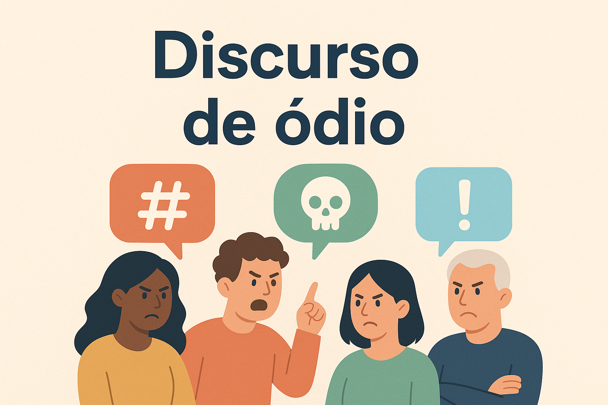

Discurso de ódio é toda forma de expressão, falada, escrita ou compartilhada que ataca, humilha ou desvaloriza pessoas ou grupos com base em características como raça ou cor, orientação sexual, identidade de gênero, origem, crença, deficiência, aparência física ou condição social. Essas manifestações não são simples opiniões, pois ultrapassam o limite da liberdade de expressão ao violar a dignidade e os direitos humanos. O discurso de ódio incentiva a discriminação e a violência, prejudicando a convivência respeitosa e a igualdade entre as pessoas.
